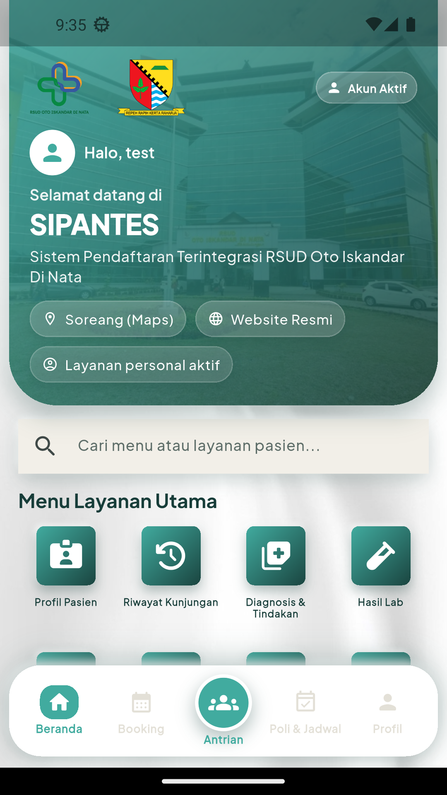
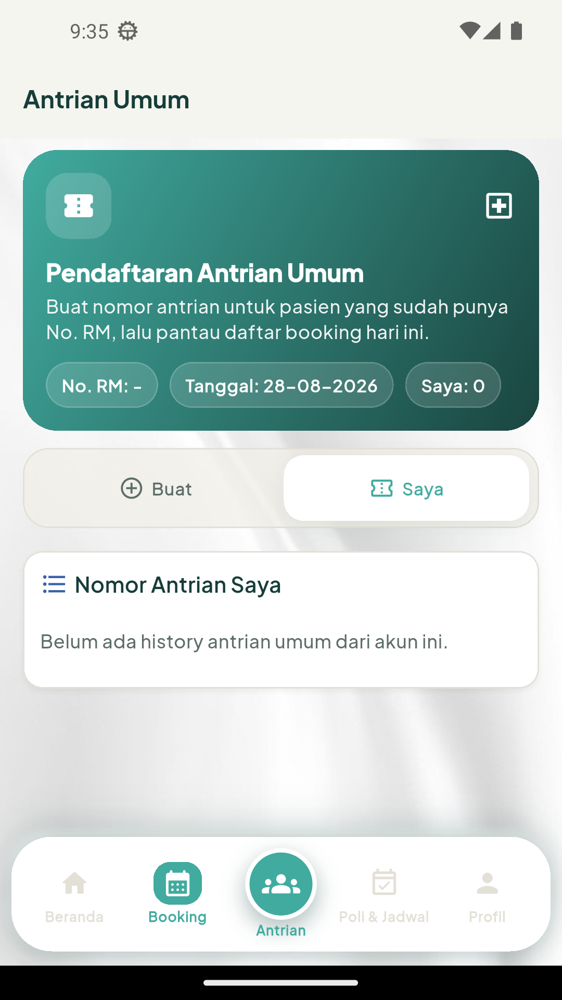

RSUD Oto Iskandar Di Nata Kabupaten Bandung
Versi 1.0 | 10 September 2026
Dokumen operasional internal
SIPANTES adalah aplikasi Flutter Android (id.rsudotista.sipantes) dengan flutter_bloc, HTTP ApiClient, flutter_secure_storage, path_provider, dan open_filex.
| Lokasi | Peran |
|---|---|
| lib/core | Config, network, theme, widget bersama. |
| lib/features/auth | OTP, sesi, klaim No. RM, hapus akun. |
| lib/features/api_data | Data pasien dan sumber daya RS. |
| lib/features/booking | Kalender, opsi, booking, riwayat. |
Base URL default: https://api-mobile.rsudotista.my.id/api/v1. Override melalui APP_ENV, API_BASE_URL, DEV_API_BASE_URL, atau PROD_API_BASE_URL.
Release memerlukan keystore/key.properties yang aman; jangan commit secret.
Registrasi: /auth/register → /auth/verify-otp-new-user → /auth/set-password. Login: /auth/login → /auth/verify-otp. Endpoint personal memakai Bearer token.
Endpoint personal: /mobile/patient/profile, visits, medical-summaries, laboratory-results, radiology-results, prescriptions, booking/general/mine, dan PDF resume. Endpoint publik meliputi poli, jadwal dokter, dan kamar.
| Gejala | Tindakan |
|---|---|
| Storage emulator penuh | Wipe Data/hapus aplikasi, flutter clean, lalu run ulang. |
| 401 | Periksa sesi/refresh dan login ulang. |
| Timeout | Periksa base URL, health API, dan jaringan. |
| PDF gagal dibuka | Periksa respons biner, storage, dan pembaca PDF. |

Beranda.

Booking.